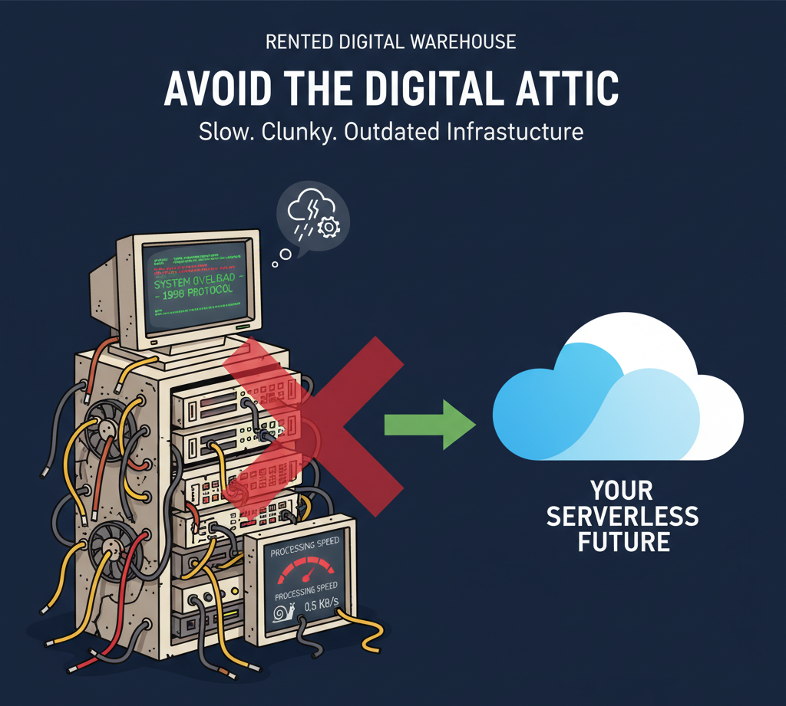
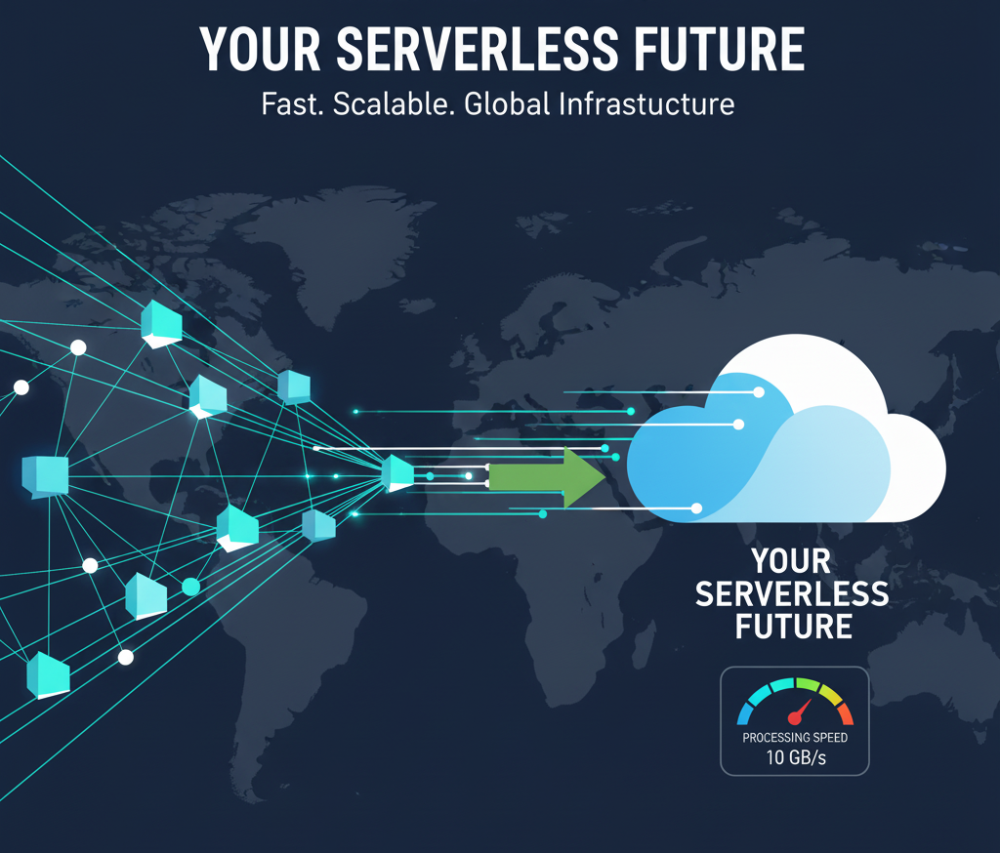

When you think about getting a new website, you probably budget for the initial design and build. But what about the hidden costs? For years, business owners have been stuck paying monthly fees for hosting, maintenance, and security updates, often for slow websites built on platforms like WordPress.
What if you could eliminate those costs entirely?
At Site Mills, we do things differently. We build websites using a modern, serverless approach. This isn't just a technical detail—it's a fundamental shift that results in a faster, more secure, and dramatically more affordable website for your business.
The Old Way: Renting a Digital Warehouse
Traditional websites rely on a central server that works like a rented warehouse. Every time a visitor wants to see a page, the server has to run code, grab data from a database, assemble the page, and then send it. This process is slow, creates security risks (an open door for hackers), and requires constant maintenance and updates. You pay a fixed monthly rent for this "warehouse," whether you have one visitor or one thousand.
The Site Mills Way: A Global, Instant Delivery Network
A serverless website works more like a global, on-demand delivery service. Instead of building the page for every visitor, we pre-build your entire website into a set of ultra-fast, optimized files. These files are then distributed across a global network (a Content Delivery Network or CDN).
When a visitor comes to your site, the page is delivered instantly from the location closest to them. There's no complex server to manage, no database to query, and no code to run.
What This Means for You and Your Business
This modern approach delivers four key benefits that directly impact your bottom line and peace of mind.
1. Blazing-Fast Speed
Because your pages are pre-built and served from a global network, they load almost instantly. A faster website means a better user experience, which leads to higher engagement, more conversions, and better rankings on Google.
2. Fort Knox-Level Security
One of the biggest headaches with platforms like WordPress is the constant need for security updates to plugins and themes. Our serverless sites have a dramatically smaller attack surface because there's no traditional server or complex backend to hack. This means less worrying for you.
3. Radically Lower (or Zero) Costs
This is the game-changer. The services we use to host serverless websites, like Netlify and Firebase, have incredibly generous free tiers designed for professional use. For the vast majority of small and medium-sized businesses, this means your monthly hosting and database bill is $0. If your site becomes wildly successful and traffic explodes, the serverless model simply scales with you on a pay-as-you-go basis, so you never pay for capacity you don't use.
4. Zero Maintenance Headaches
Forget about "update" notifications and plugin compatibility issues. A serverless site is stable and reliable. Once it's built and deployed, it just works. This frees you up to focus on what you do best: running your business.
Ready to build a website that's faster, safer, and frees you from monthly bills? That's the modern standard we deliver.
Contact us today for a free consultation and let's build something great together.